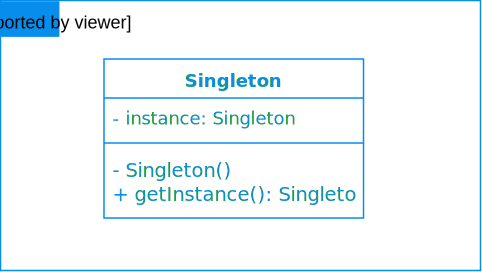

Definition
The singleton pattern is a software design pattern that restricts the instantiation of a class to one single instance
Problem trying to solve
- How can it be ensured that a class has only one instance ?
- How can the sole instance of a class be accessed easily ?
- How can a class control its instantiation ?
- How can the number of instances of a class be restricted ?
UML Diagram
Implementation
Simple Implementation
public class Singleton {
private static final Singleton INSTANCE = new Singleton();
private Singleton() {
}
public static Singleton getInstance() {
return INSTANCE;
}
}
Lazy-initialization Implementation
public class LazyInitializationSingleton {
private static LazyInitializationSingleton instance = null;
private LazyInitializationSingleton() {
}
public static LazyInitializationSingleton getInstance() {
if (instance == null) {
instance = new LazyInitializationSingleton();
}
return instance;
}
}
Lazy-initialization could bring big improvement in the application performance, but the previous implementation is not thread-safe.
To demonstrate that, we are going to add some delay in the Singleton constructor and we are going to use 10 threads which are going to print the result of the Singleton.getInstance() method. From the definition of Singletons, the output of these threads must be the same
public class LazyInitializationSingleton {
private static LazyInitializationSingleton instance = null;
private LazyInitializationSingleton() {
try {
Thread.sleep(50); // simulate creation delay
} catch (InterruptedException e) {
e.printStackTrace();
}
}
public static LazyInitializationSingleton getInstance() {
if (instance == null) {
instance = new LazyInitializationSingleton();
}
return instance;
}
}
public class SingletonDemo {
public static void main(String[] args) {
ExecutorService executor = Executors.newFixedThreadPool(2);
IntStream.range(0, 10).forEach(i -> executor.execute(SingletonDemo::createAndPrintSingleton));
executor.shutdown();
}
private static void createAndPrintSingleton() {
LazyInitializationSingleton singleton = LazyInitializationSingleton.getInstance();
System.out.println(singleton);
}
}
Now when we run the main method, we can notice that we have broken the Singleton principal. In fact we have instantiated more than once the LazyInitializationSingleton class
LazyInitializationSingleton@3c72420e
LazyInitializationSingleton@24f02989
LazyInitializationSingleton@24f02989
Thread-safe Lazy-initialization Implementation
public class ThreadSafeLazyInitializationSingleton {
private static ThreadSafeLazyInitializationSingleton instance = null;
private ThreadSafeLazyInitializationSingleton() {
}
public static ThreadSafeLazyInitializationSingleton getInstance() {
if (instance == null) {
synchronized (ThreadSafeLazyInitializationSingleton.class) {
if (instance == null) {
instance = new ThreadSafeLazyInitializationSingleton();
}
}
}
return instance;
}
}